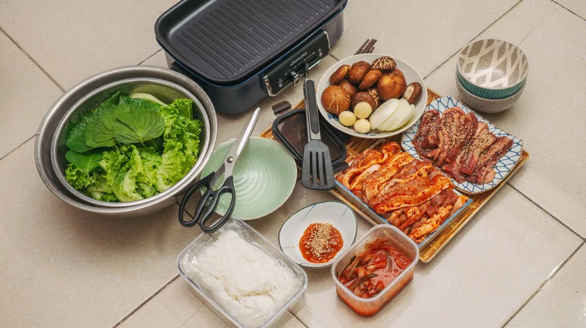

내 몸에 맞는 약선 음식 선택법: 후기와 놓치면 안 될 주의사항
사진: Engin Akyurt / Pexels (무료 이미지, 출처 표기)
약선 음식, 무엇을 알고 시작해야 할까요?

약선 음식에 대한 관심은 높지만, 막상 어떤 것을 선택해야 할지, 또 섭취 시 주의할 점은 없는지 막막하게 느끼는 분들이 많습니다. 단순히 몸에 좋다고 알려진 재료를 무작정 섭취하는 것보다는, 자신의 체질과 건강 상태를 고려하여 현명하게 접근하는 것이 중요합니다. 이 글에서는 약선 음식을 건강하게 즐기기 위해 필요한 정보와 실제 경험자들의 후기, 그리고 반드시 알아야 할 주의사항을 자세히 안내해 드립니다.
내 몸에 맞는 약선 음식 고르는 법: 체질부터 확인하세요
약선 음식(藥膳飮食)은 약이 되는 재료를 이용해 만든 음식을 의미하며, 한의학적 원리에 기반하여 몸의 균형을 맞추고 건강을 증진시키는 것을 목표로 합니다. 중요한 것은 '누구에게나 좋은 음식'은 없다는 점입니다. 자신의 체질과 현재 건강 상태에 따라 섭취해야 할 약선 음식이 달라질 수 있습니다.
특히 사상체질(四象體質: 태양인, 태음인, 소양인, 소음인)은 한의학에서 개인의 특성을 분류하는 중요한 기준입니다. 자신의 체질을 정확히 아는 것이 약선 음식을 선택하는 첫걸음이 됩니다. 정확한 체질 진단은 한의사와 상담을 통해 이루어지는 것이 가장 좋지만, 일반적으로 알려진 체질별 특징과 권장 식재료를 참고할 수 있습니다.
2026년 10월 기준, 대표적인 체질별 특징과 권장 식재료는 다음과 같습니다.
이 표는 일반적인 참고 자료이며, 개인의 건강 상태는 매우 복합적이므로 전문가와의 상담 없이 특정 약선 음식을 장기간 섭취하는 것은 권장하지 않습니다.
약선 음식 경험자들의 솔직한 후기
약선 음식을 접한 사람들은 다양한 후기를 들려줍니다. 주로 긍정적인 경험으로는 '몸이 따뜻해지고 기운이 나는 것 같다', '소화가 편안해졌다', '숙면을 취하는 데 도움이 됐다' 등이 있습니다. 특히 만성 피로나 소화 불량, 냉증 등으로 고생하던 분들이 체질에 맞는 약선 음식을 섭취한 후 개선을 체감하는 경우가 많습니다.
반면, 기대만큼 효과를 보지 못했거나 오히려 불편함을 느꼈다는 후기도 있습니다. 이는 자신의 체질과 맞지 않는 약선 음식을 섭취했거나, 짧은 기간 동안 일시적으로만 섭취하여 효과를 보기 어려웠던 경우, 또는 과도한 기대 때문에 실망한 경우 등이 원인으로 분석됩니다. 약선 음식은 즉각적인 약효보다는 꾸준한 섭취를 통해 몸의 균형을 찾아가는 과정으로 이해하는 것이 중요합니다.
약선 음식 섭취 전 꼭 알아야 할 주의사항
아무리 몸에 좋다는 약선 음식이라도 몇 가지 주의사항을 반드시 지켜야 합니다. 무분별한 섭취는 오히려 건강에 해가 될 수 있습니다.
- 전문가와 상담: 개인의 체질, 현재 건강 상태, 복용 중인 약 등을 종합적으로 고려하여 약선 음식의 종류와 섭취 방법을 결정하는 것이 가장 안전합니다. 특히 특정 질환을 앓고 있거나 임산부, 수유부, 어린이는 반드시 한의사 등 전문가와 상담 후 섭취 여부를 결정해야 합니다.
- 성분 확인: 약선 음식에 사용되는 재료가 자신의 알레르기 유발 물질은 아닌지, 또는 특정 질환에 좋지 않은 성분은 없는지 꼼꼼히 확인해야 합니다. 예를 들어, 당뇨 환자는 당분이 높은 재료를 피해야 하고, 고혈압 환자는 나트륨 함량이 높은 음식을 주의해야 합니다.
- 과도한 섭취 금지: 아무리 좋은 음식이라도 과도하게 섭취하면 부작용이 발생할 수 있습니다. 약선 음식은 '약'의 성질을 가지므로 적정량을 지켜 섭취하는 것이 중요합니다.
- 신선도 및 위생: 식재료의 신선도와 위생은 아무리 강조해도 지나치지 않습니다. 약선 재료를 직접 구매한다면 원산지와 유통기한을 확인하고, 신뢰할 수 있는 판매처를 이용하는 것이 좋습니다.
- 변화 관찰: 약선 음식 섭취 후 몸의 변화를 주의 깊게 관찰해야 합니다. 만약 불편함이나 예상치 못한 증상이 나타난다면 즉시 섭취를 중단하고 전문가와 상담해야 합니다.
약선 음식은 일반 식사와 달리 약재의 특성을 포함하고 있으므로, 신중한 접근이 필요합니다. 2026년 10월 현재, 식약처나 보건복지부 등 공식 기관에서는 특정 약선 음식의 효능을 단정하여 광고하는 것을 제한하고 있으니, 과장 광고에 현혹되지 않도록 주의하시기 바랍니다.
약선 음식, 어디서 어떻게 접할 수 있을까요?
약선 음식을 접하는 방법은 다양합니다.
- 전문 식당: 약선 요리를 전문으로 하는 식당을 방문하여 다양한 메뉴를 맛볼 수 있습니다. 이 경우 대부분 한의학적 원리에 기반한 코스 요리를 제공하며, 식당마다 특색 있는 재료와 조리법을 사용합니다.
- 밀키트/온라인 스토어: 집에서 간편하게 즐길 수 있도록 약선 재료를 조합한 밀키트나 온라인 스토어에서 판매하는 약선 식품을 구매할 수 있습니다. 구매 전 성분표와 조리법, 후기 등을 꼼꼼히 확인하는 것이 중요합니다.
- 한방병원/한의원: 일부 한방병원이나 한의원에서는 환자들을 위한 약선식을 제공하거나, 개인의 체질에 맞는 약선 레시피를 상담을 통해 제공하기도 합니다.
- 직접 조리: 약선 관련 서적이나 온라인 정보를 참고하여 직접 약선 음식을 만들어 볼 수도 있습니다. 이 경우 신뢰할 수 있는 약재상에서 재료를 구매하고, 전문가의 조언을 구하는 것이 좋습니다.
어떤 방법으로 접하든, 처음부터 무리하게 시작하기보다는 소량으로 시작하여 몸의 반응을 살펴보는 지혜가 필요합니다. 약선 음식은 건강한 삶을 위한 하나의 선택지이며, 일상 식습관 개선과 균형 잡힌 생활을 병행할 때 그 효과를 극대화할 수 있습니다.
🔗 이 글도 함께 보면 좋아요: 내 몸에 꼭 맞는 한방차, 실패 없이 재료 고르는 3가지 비법
관련 추천 상품
약선 한약재, 약선 요리 재료, 한방 건강식 관련 인기 상품 보러가기
이 포스팅은 쿠팡 파트너스 활동의 일환으로, 이에 따른 일정액의 수수료를 제공받습니다.